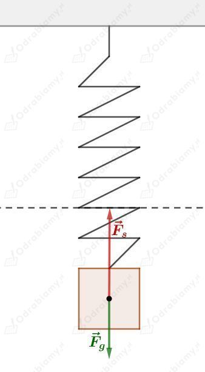

Prawo Hooke'a zapisujemy jako:
Stąd:
Widzimy, że przyrost długości sprężyny jest wprost proporcjonalny do przyłożonej siły .
Na wykresie taką zależność przedstawiamy rosnącą funkcją liniową:
Odp. A.
Dane:
Szukane:
Rozwiązanie:
Prawo Hooke'a zapisujemy jako:
Wyznaczmy przyrost długości sprężyny:
Odp. C.
Rysunek pomocniczy do zadania:

Ciężarek porusza się w górę i znajduje się poniżej położenia równowagi (linia przerywana). Siła wypadkowa działająca na ciężarek jest zawsze zwrócona w kierunku położenia równowagi. W naszym przypadku wektor prędkości ciężarka i siły wypadkowej mają ten sam zwrot, zatem ciężarek porusza się ruchem przyspieszonym.
a)
b)
Zgodnie z zasadą zachowania energii mechanicznej suma energii potencjalnej grawitacji, sprężystości i energia kinetyczna jest stała dla danego układu drgającego. Energia potencjalna sprężystości maleje i jest zamieniana na energię potencjalną grawitacji i energię kinetyczną.
Przyjęta częstotliwość fali radiowej:
Fale radiowe to fale elektromagnetyczne, których prędkość rozchodzenia się jest równa prędkości światła:
Prędkość fali wyrażamy jako iloczyn długości fali i częstotliwości :
Wyznaczmy długość tych fal radiowych:
Długość początkowa sprężyny wynosi:
Współczynnik sprężystości sprężyny wynosi:
Korzystamy z prawa Hooke'a:
Zależność wydłużenia sprężyny od siły rozciągającej będzie dana jako:
Całkowita długość sprężyny będzie równa jej długości początkowej powiększonej o wartość wydłużenia .
Zatem:
Otrzymujemy zależność długości sprężyny od przyłożonej siły jako funkcję liniową.
gdzie:
Podstawiając wartości liczbowe mamy:
Rysujemy wykres tej funkcji liniowej:
Wzór na okres drgań wahadła matematycznego jest dany jako:
a)
Podana długość wahadła:
Wyznaczmy okres drgań tego wahadła:
b)
Podany okres drgań wahadła:
Wyznaczmy długość tego wahadła:
c)
Okres drgań wahadła na Ziemi:
Okres drgań wahadła na Księżycu:
Przyspieszenie grawitacyjne na Księżycu jest 6 razy mniejsze od ziemskiego.
Stąd:
Chcemy, aby okresy drgań wahadeł były takie same:
Wahadło na Ziemi ma długość:
Zatem wahadło na Księżycu musi mieć długość:
d)
Korzystamy ze wzoru na okres drgań wahadła:
Wyznaczona zależność na przyspieszenie ziemskie będzie równa:
Zatem w celu obliczenia przyspieszenia ziemskiego należy zmierzyć długość wahadła i zbadać jego okres drgań .